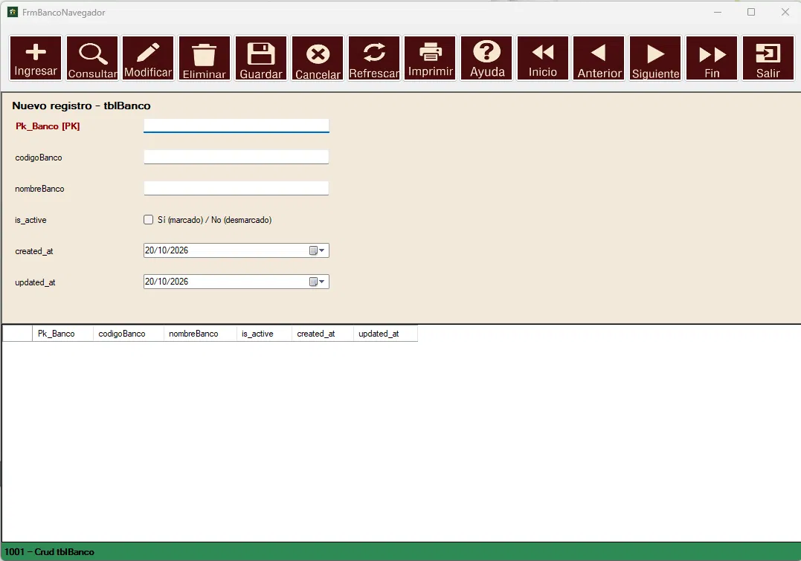
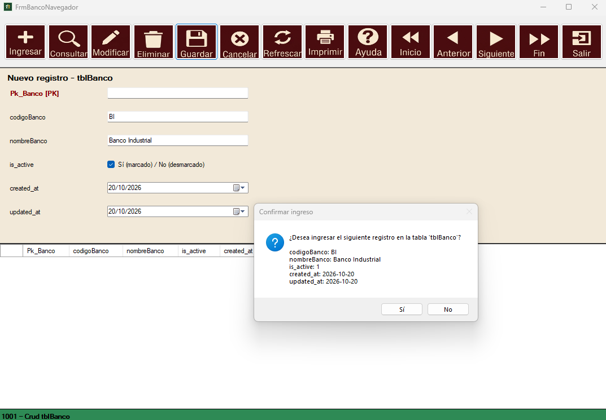
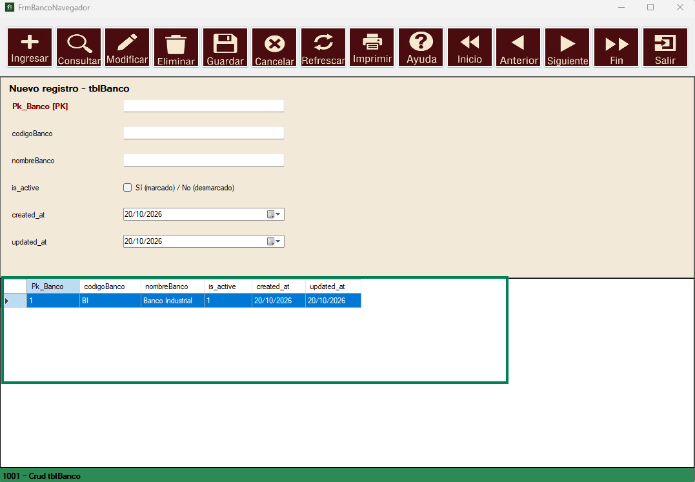
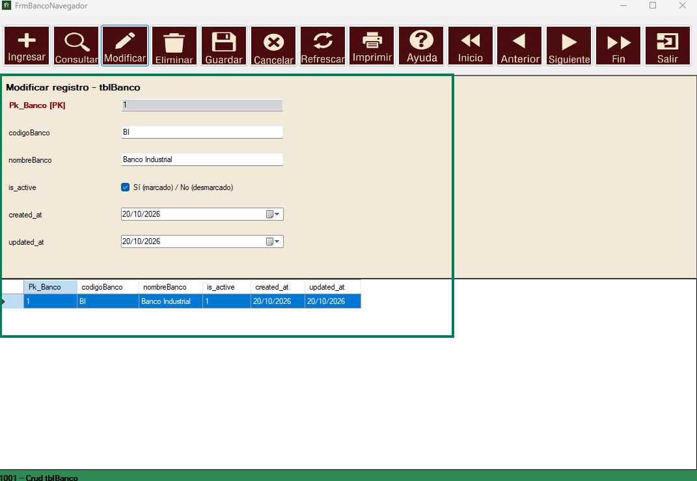
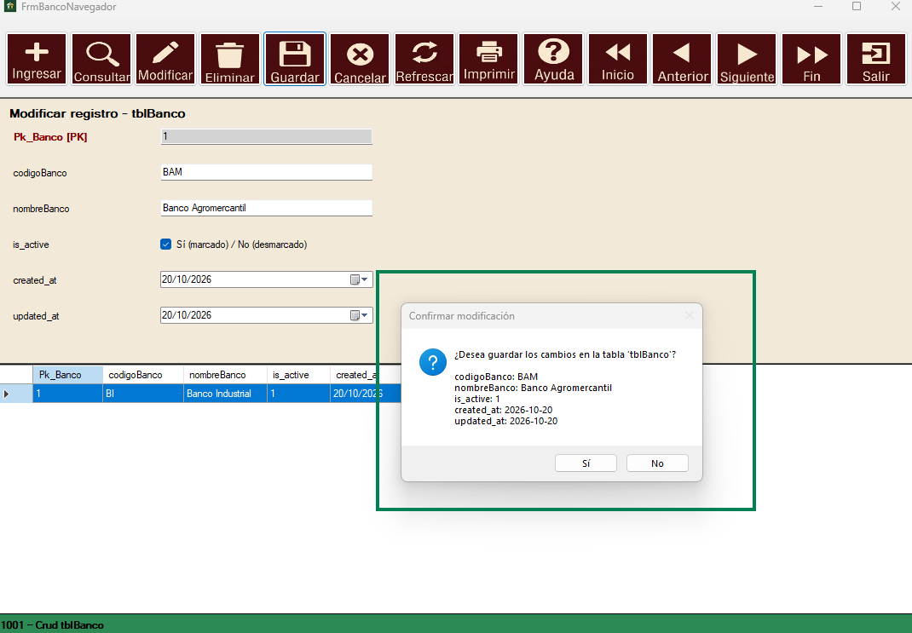
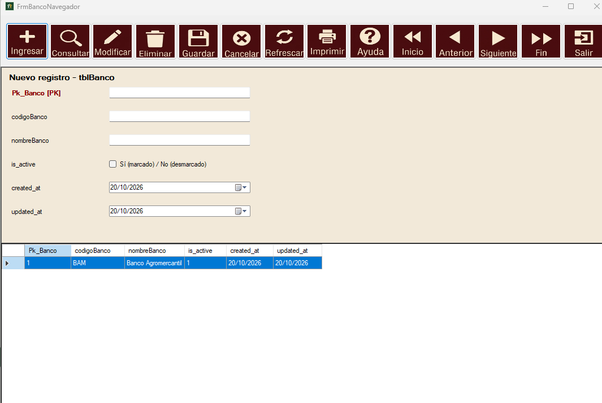
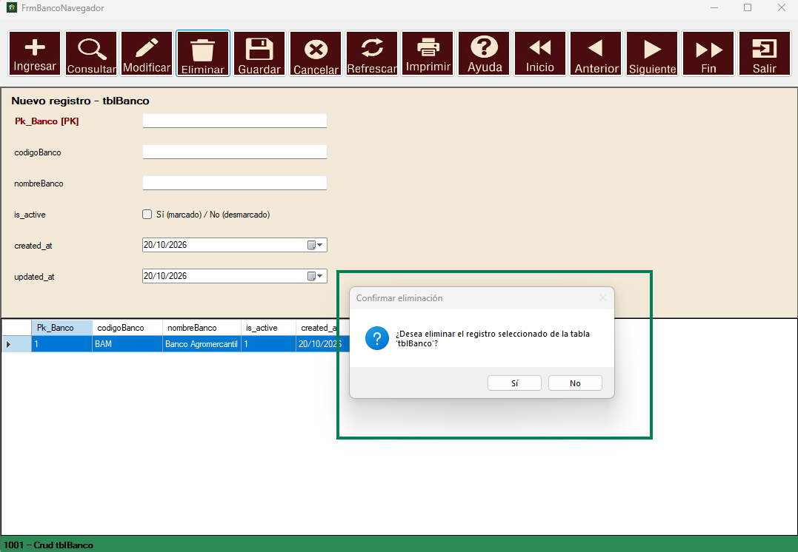

El formulario de Bancos permite registrar, consultar, modificar y eliminar los bancos que utiliza la empresa. Cada banco se identifica por un código único y un nombre. Este mantenimiento es la base para asociar cuentas bancarias dentro del módulo bancario.
Al abrir el formulario, el navegador se muestra en estado inicial. Los campos aparecen vacíos y la tabla inferior no contiene registros hasta que se realice alguna operación. La barra de estado indica "1001 – Crud tblBanco" confirmando que la conexión con la tabla es correcta.

Para registrar un nuevo banco, presione el botón Ingresar. Los campos codigoBanco y nombreBanco se habilitarán para captura. El campo Pk_Banco es asignado automáticamente por la base de datos y no se puede editar. Ingrese el código, el nombre, marque el estado is_active si el banco está activo y presione Guardar.
El sistema mostrará un cuadro de confirmación con el resumen del registro antes de almacenarlo. Presione Sí para confirmar o No para cancelar.

Al confirmar el ingreso, el registro se almacena en la base de datos y aparece en la tabla inferior. El sistema regresa automáticamente al modo de consulta mostrando el nuevo registro con su Pk_Banco asignado.

Seleccione el registro a modificar en la tabla y presione el botón Modificar. Los campos se cargarán con los datos actuales del banco seleccionado. El campo Pk_Banco permanece bloqueado ya que es la llave primaria y no puede modificarse. Realice los cambios necesarios y presione Guardar.

Al presionar Guardar en modo Modificar, el sistema muestra un cuadro de confirmación con los nuevos datos del registro. Verifique que los datos sean correctos y presione Sí para aplicar los cambios o No para descartarlos.

Tras confirmar la modificación, la tabla se actualiza automáticamente mostrando los datos nuevos del registro. El sistema regresa al modo de consulta.

Para eliminar un banco, selecciónelo en la tabla y presione el botón Eliminar. El sistema mostrará un cuadro de confirmación indicando qué registro será eliminado. Presione Sí para confirmar la eliminación permanente o No para cancelar. Esta acción no se puede deshacer.
